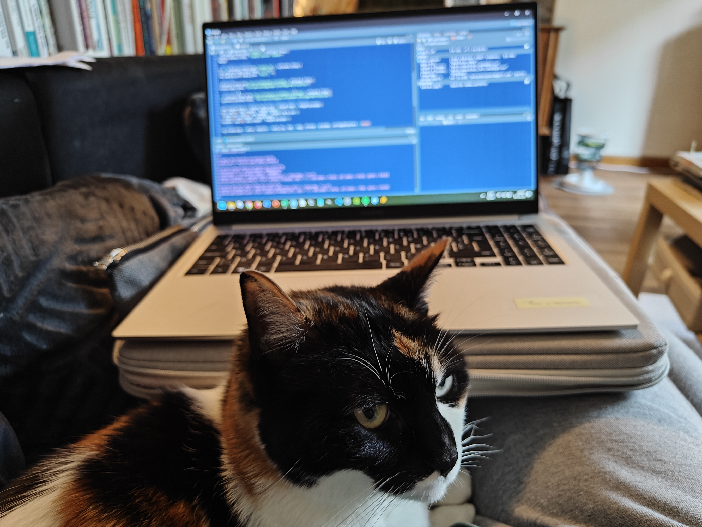

Coding Zena
Gender: Female Date of birth: 01/05/2015 Nationality: Belgian
Residence: Belgium
Phone: (+32)0123456789
Email: codingzena@gmail.com
ORCID: 0000-0000-0000-0000
LinkedIn: sarah-houben-6238abba
PROFESSIONAL EXPERIENCE
Chief Operating Officer
1st January 2023 – Today Home (Belgium)
- Hooman sleeping hours coordination
- Wake her up at decent hour
- Jump on her if she is not cooperative
- Control food quality
- Control of litter box emptyness
Sleeping Manager
2nd August 2021 – 31st December 2022 Bedroom (Belgium)
- Data management
- Creation and implementation of a wake-up alarm
- Coordination of my hooman sleep hours
- Ensure my hooman does not sleep too much
Hunter
10th October 2013 – 31st July 2021 Home (Belgium)
- Laser pointer chaser
- Spiders hunter
EDUCATION
2013 - 2020 PhD in Sleeping sciences Home
2011 - 2013 Master in Sleeping Sciences Home
2007 - 2011 Bachelor in Sleeping Sciences Home
TRAINING
2021 - Today Data Science and Data Management DataCamp
2023 Responsive Web Design freeCodeCamp
LANGUAGES
| Language | French | English | German | Dutch | Spanish |
| Level | Native | C2 | C1 | B2 | B1 |
IT SKILLS
Data Science and Data Management: R, Python, SQL
Spatial Data Analysis: GIS (QGIS & R)
Word Processing and Communication: Office Suite, LaTeX, RMarkdown, Quarto, Shiny
Web Development: CMS (Drupal), Visual Studio Code (HTML5, CSS3, JavaScript)
SOFT SKILLS
Empty the litter box really quicky
Can meow very loudly
Can sleep everywhere
Can sleep for 15 hours in a row
VOLUNTEERING
2016 - Today Volunteer in a cat shelter
HOBBIES
Travel, Coding, Photography, Treks, Piano, Drawing, and Painting
PUBLICATIONS
Just an example here, not my paper but to stay consistent with the theme of this template and to finish with a humor note.
2024
Cat Ownership and Schizophrenia-Related Disorders and Psychotic-Like Experiences: A Systematic Review and Meta-Analysis. John J McGrath, Carmen C W Lim, Sukanta Saha DOI: 10.1093/schbul/sbad168